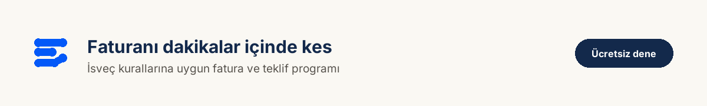
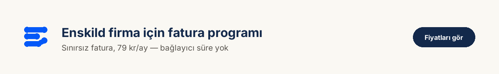

İsveç'te kendi işini kurmak isteyen Türklerin büyük kısmı enskild firma ile başlıyor. Sebebi basit: en hızlı, en ucuz ve en az bürokrasi gerektiren şirket türü. Sermaye şartı yok, noter yok, ortak aramak yok.
Ama "kolay" demek "kuralsız" demek değil. Bu yazı, enskild firma kurmanın gerçekte nasıl işlediğini, hangi kaydın zorunlu hangisinin isteğe bağlı olduğunu ve kurduktan sonra ilk gün karşınıza çıkacak konuları anlatıyor.
Enskild firma nedir?
Enskild firma (enskild näringsverksamhet), şirketin ayrı bir tüzel kişiliği olmayan işletme türüdür. Siz ve firmanız hukuken aynı kişisiniz.
Bunun üç somut sonucu var:
Organisationsnummer'ınız personnummer'ınızdır. Ayrı bir şirket numarası almazsınız. Kestiğiniz her faturada personnummer'ınız yazar — bunu müşterilerinizden gizleyemezsiniz.
Borçlardan kişisel olarak sorumlusunuz. Firma borçlanırsa alacaklı sizin kişisel varlığınıza yönelebilir. Aktiebolag'da ise sorumluluk şirket sermayesiyle sınırlıdır. Riskli ve yüksek cirolu işler planlıyorsanız bu fark önemlidir.
Kâr doğrudan sizin gelirinizdir. Maaş ödemezsiniz; kârdan vergi ve sosyal güvenlik primi (egenavgifter) ödersiniz.
Küçük ölçekli hizmet işleri — tadilat, temizlik, danışmanlık, nakliye, kuaförlük, çeviri — için enskild firma genelde doğru başlangıçtır.

Hangi kayıt zorunlu, hangisi değil?
Burada çok yaygın bir yanlış bilgi var: Bolagsverket'e kayıt zorunlu değildir.
İki ayrı kurum, iki ayrı iş:
Skatteverket — asıl yapılması gereken
Vergi dairesine kayıt, işin özü. Buradan üç şey başvurusu yaparsınız:
- F-skatt — işletme olarak kendi verginizi ve primlerinizi ödeyeceğinizin onayı
- Moms kaydı — gerekiyorsa (aşağıda sınırı var)
- İşveren kaydı — sadece personel çalıştıracaksanız
Üçünü de verksamt.se üzerinden tek başvuruda, internetten yapabilirsiniz. BankID gerekir.
Bolagsverket — isteğe bağlı
Buraya yaptığınız şey firma isminizi tescil ettirmek. Kendi adınızdan farklı bir isim kullanmak ve o ismi korumak istiyorsanız gereklidir.
- Ücret: 1 200 kr
- Koruma il (län) bazında geçerlidir; birden fazla ilde koruma isterseniz her il için ayrı ücret ödersiniz
Zorunlu olduğu bazı durumlar var — örneğin kamu ihalelerine girecekseniz veya faaliyetiniz ruhsat gerektiriyorsa. Onun dışında kendi adınızla çalışabilir, bu masraftan kaçınabilirsiniz.
F-skatt neden bu kadar önemli?
F-skatt'ı "bir belge daha" diye görmeyin. Olmadığı zaman şu olur:
Size ödeme yapan taraf, ödemeden %30 vergi kesmek zorundadır. Bu bir tercih değil, yükümlülük. Yani:
- Siz daha az para alırsınız
- Müşteriniz istemediği bir muhasebe yükü altına girer
- Çoğu kurumsal müşteri bu yüzden F-skatt'ı olmayan biriyle hiç çalışmaz
Ayrıca ROT ve RUT indirimleri F-skatt şartına bağlıdır. Tadilat veya temizlik işi yapıp müşterinize indirim kazandırmak istiyorsanız, F-skatt olmadan bu mümkün değil.
Bu yüzden faturanıza "Godkänd för F-skatt" ibaresini koymak önemlidir — müşteriniz kesinti yapması gerekmediğini oradan görür.
Moms kaydı yaptırmalı mısınız?
Burada güncel bir bilgi var ve internetteki pek çok rehber eski rakamı yazıyor.
Moms muafiyeti sınırı 120 000 kr. Yıllık cironuz bu tutarın altında kalıyorsa moms kaydı yaptırmak zorunda değilsiniz. Şart, önceki iki yılda da bu sınırı aşmamış olmanız.
💡 Dikkat: eski rakam hâlâ dolaşıyor
Bu sınır 1 Ocak 2025'te 80 000 kr'den 120 000 kr'ye yükseltildi. Hâlâ 80 000 yazan rehberlere göre hesap yaparsanız gereksiz yere kayıt yaptırabilirsiniz. Konunun detayı için KDV (moms) muafiyeti rehberimize bakabilirsiniz.
Muafiyet isteğe bağlıdır. Sınırın altında olsanız bile kayıt yaptırabilirsiniz. Hangisi mantıklı?
- Çok malzeme alıyorsanız kayıt olmak avantajlı — aldığınız malzemenin momsunu indirirsiniz
- Müşterileriniz özel kişiyse ve masrafınız azsa muaf kalmak genelde daha basittir
Kurduktan sonra: ilk fatura
Firma kurulduğu gün değil, ilk faturayı kestiğiniz gün gerçekten başlamış olursunuz. Ve burada çoğu kişi hazırlıksız yakalanır, çünkü İsveç'te faturanın içeriği kanunla belirlenmiş.
Bir faturada bulunması gerekenler:
- Fatura tarihi ve boşluksuz ilerleyen sıra numarası
- Sizin ve müşterinizin adı ve adresi
- Organisationsnummer'ınız (yani personnummer'ınız)
- Moms kaydınız varsa momsregistreringsnummer
- Satılan hizmetin türü ve miktarı — "hizmet bedeli" yeterli değil
- Her moms oranı için ayrı matrah, oran ve tutar
- Moms alınmıyorsa sebebi
⚠️ Son maddeyi atlamayın
Örneğin başka bir inşaat firmasına taşeron olarak çalışıyorsanız moms eklemezsiniz — ama faturaya omvänd betalningsskyldighet yazmanız ve müşterinizin moms numarasını belirtmeniz gerekir. Yazmazsanız Skatteverket "bu faturada moms alınmalıydı" diyebilir ve tahsil etmediğiniz %25'i kendi cebinizden ödersiniz.
ROT ve RUT işleri
Müşteriniz özel kişiyse ve iş tadilat, temizlik, bahçe veya nakliye kapsamındaysa indirim söz konusu olur:
- ROT — işçiliğin %30'u, kişi başı yılda en fazla 50 000 kr
- RUT — işçiliğin %50'si
- İkisi birlikte, kişi başı yılda toplam 75 000 kr
İndirim yalnızca işçilik üzerinden hesaplanır. Malzeme, yol, makine kirası ve moloz taşıma indirime girmez. Bu yüzden faturada işçiliği ve malzemeyi ayrı satırlara yazmak zorundasınız.
Muhasebe yükümlülüğü
Enskild firma da muhasebe tutmak zorundadır. Basitleştirilmiş yıl sonu kapanışı (förenklat årsbokslut) çoğu küçük işletme için yeterlidir.
Faturalarınızı ve belgelerinizi yedi yıl saklamanız gerekir. Süre fatura tarihinden değil, mali yılın bittiği takvim yılının sonundan başlar — 2026 faturası 31 Aralık 2033'e kadar saklanır.

Sık sorulan sorular
Kurmak ne kadar sürer?
Skatteverket'e internetten başvuru dakikalar sürer. F-skatt onayı genelde birkaç hafta içinde çıkar; yoğunluğa göre değişir.
Çalışırken yan işte enskild firma kurabilir miyim?
Evet. İş sözleşmenizde rekabet yasağı yoksa engel yoktur. Vergi açısından firma kârınız diğer gelirinizle birleşir.
A-kassa alırken firma kurabilir miyim?
Bu konu dikkat ister ve kuralları ayrıntılıdır. Kendi a-kassa kurumunuza başvurudan önce sormanız doğru olur.
Sonradan aktiebolag'a geçebilir miyim?
Evet, bu yaygın bir yoldur. Ciro ve risk büyüdükçe birçok kişi aktiebolag'a geçer.
Banka hesabı açmam gerekir mi?
Zorunlu değil ama şiddetle tavsiye edilir. İşletme hareketlerini kişisel hesabınızla karıştırmak muhasebeyi zorlaştırır.
Özet
| Adım | Nerede | Zorunlu mu |
|---|---|---|
| F-skatt başvurusu | verksamt.se / Skatteverket | Pratikte evet |
| Moms kaydı | verksamt.se / Skatteverket | Ciro 120 000 kr üstündeyse |
| İsim tescili | Bolagsverket, 1 200 kr | Hayır |
| İşveren kaydı | Skatteverket | Personel çalıştıracaksanız |
Enskild firma kurmak, sanıldığından kolay. Asıl dikkat isteyen kısım kuruluştan sonrası: doğru faturayı kesmek, doğru moms oranını uygulamak ve belgeleri düzenli tutmak.
Firmanızı doğru kurun, baştan
F-skatt başvurusu, moms tercihinin hesabı ve ilk faturanın yasal içeriği — bu üç konuda yapılan hatanın bedeli sonradan çıkıyor. Türkçe konuşan danışmanlarımızla kendi durumunuzu konuşabilirsiniz.
Bu yazıdaki tutar ve oranlar 22 Ekim 2026 tarihinde Skatteverket, Bolagsverket ve verksamt.se kaynaklarından kontrol edilmiştir. İsveç'te kurallar değişebilir; kendi durumunuza özel sorular için bir redovisningskonsult ile görüşmeniz en doğrusudur.